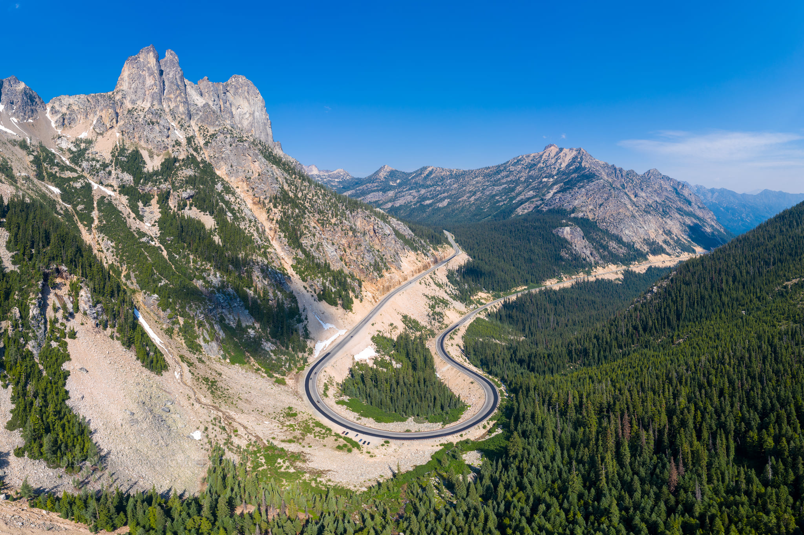
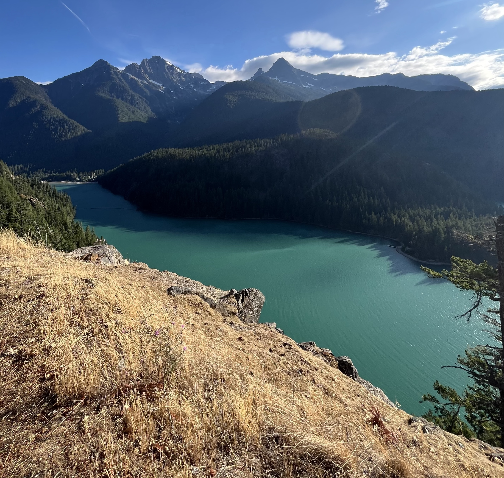
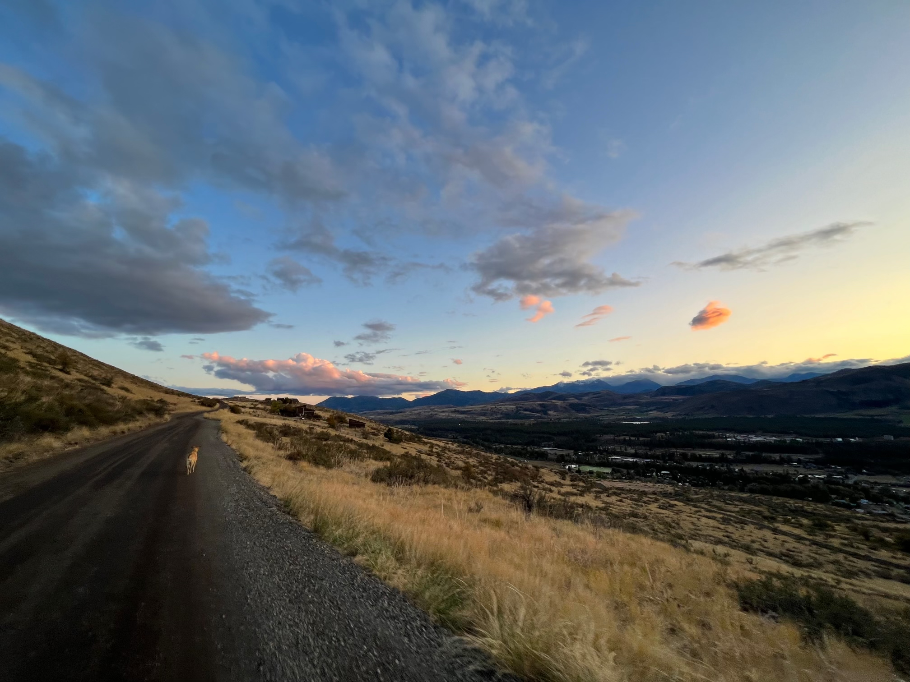

Travel
Getting there

The Venue
The Cabin
Studhorse Mountain Road, Winthrop, WA 98862
The cabin is about ten minuites away from bustling downtown Winthrop (population 504) on the eastern side of the Northern Cascade mountains. (See What to Expect for more info about the venue!)
Getting Here
By Air
The closest major airport is Seattle-Tacoma International (SEA), about 4 hours from the venue. Paine Field in Everett (PAE) is a smaller, quieter option about 3.5 hours away, and has some flights from major airports (worth looking at options to PAE!). Wenatchee Airport (EAT) is the closest option, but given almost all connections go through SeaTac, you will likely just be trading driving for flying time.
By Car

While Snoqualmie pass is roughly equal in time from SeaTac, we highly recommend taking Washington Pass through North Cascades National Park (which is free to enter and does not require reservations) at least one way during the day time.
There are sections without cell service on Washington pass, so plan accordingly. The directions are simple (just keep heading East or West), so it would be hard to get lost.

We highly recommend stopping at the Diablo Lake Vista Point and the Washington Pass Observation Site to stretch your legs and soak in the scenery (they have bathrooms, too!).
Directions from Downtown Winthrop: Once you arrive in downtown Winthrop, getting to the cabin is straightforward using any navigation app. The cabin sits at the top of Studhorse Mountain at (4 miles from town): 305D Studhorse Mountain Rd Winthrop, WA 98862. We’ll have signage so keep your eyes peeled!
The road from the bottom of Studhorse Mountain is a gravel neighborhood road that’s drivable by any vehicle. Please be mindful of the neighbors and keep your speed under 20 MPH to help reduce dust and road wear.
